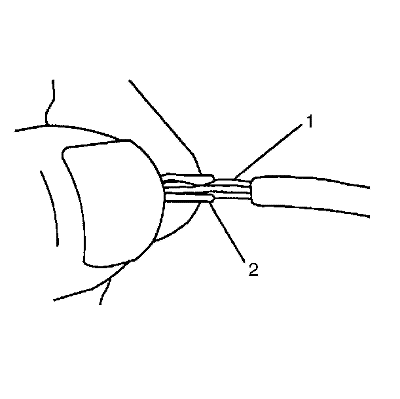
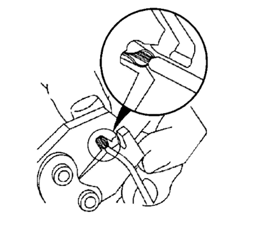
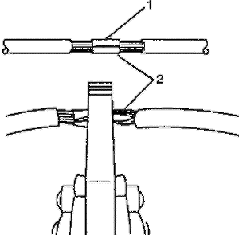
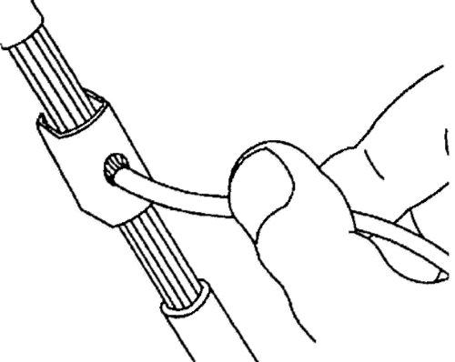
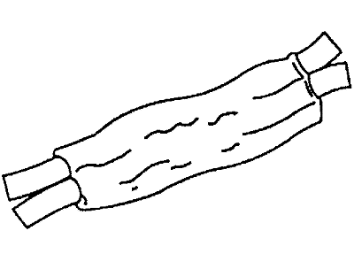
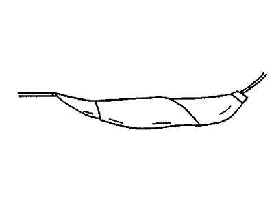

Empalmes de hilos de cobre usando casquillos de empalme
Herramientas especiales
J-38125 Juego de reparación de terminales
Nota: Cuando realice un empalme en una zona que podría exponerse a humedad, utilice un casquillo de empalme de juntas y un engarce en lugar de un clip de empalme. Consultar Empalme de hilos de cobre usando casquillos de empalme .
- Abra el mazo de cables.
| • | Si el mazo de cables tiene cinta adhesiva, quítesela. |
| • | Para no dañar el aislamiento del cableado, use un rasgador de costura para cortar y abrir el mazo de cables. |
| • | Si el mazo de cables tiene un conducto de plástico negro, extraiga el cable deseado. |
- Corte el cable.
| • | Corte la menor cantidad posible de cable. |
| • | Asegúrese de que cada empalme esté al menos a 40 mm (1,5 pulg.) de los otros empalmes, bifurcaciones de cableado o conectores. Así, se ayuda a evitar que la humedad establezca puentes entre empalmes adyacentes y produzca daños. |
- Seleccione el tipo y el tamaño de cable apropiados.
| • | El cable debe ser igual o de mayor tamaño que el original (excepto eslabón fusible). |
| • | El aislamiento del cable debe ser resistente a una temperatura igual o superior. |
| - | Utilice aislamientos de aplicación general para zonas no sometidas a altas temperaturas. |
| - | Utilice un cable con aislamiento de polietileno reticulado para zonas potencialmente sometidas a altas temperaturas. |
| | Nota: Utilice cable de polietileno reticulado para sustituir PVC, pero no sustituya polietileno reticulado con PVC. |
- Pele el aislamiento.
| • | Seleccione el abertura de tamaño correcto en el pelador de cables o empiece trabajando con el tamaño mayor, pasando poco a poco a un tamaño menor. |
| • | Pele aproximadamente 7,5 mm (5/16 pulg.) de aislamiento de cada cable que se vaya a empalmar. |
- Seleccione el clip adecuado para asegurar el empalme. Siga las instrucciones del J-38125 para determinar un yunque y una herramienta de engarce con tamaño de clip adecuado.
- Superponga los 2 extremos de cable pelados y sujételos entre el pulgar y el índice.

- Centre el clip de empalme (2) sobre los cables pelados (1) y sujételo en el lugar adecuado.
| • | Asegúrese de que los cables se prolonguen sobrepasando el clip en cada dirección. |
| • | Asegúrese de que no se haya atrapado bajo el clip parte del aislamiento. |

- Centre la herramienta de engarce sobre los cables y el clip de empalme.
- Aplique una presión modera hasta que la herramienta de engarce se cierre.
Asegúrese de que no se corte ningún hilo del cable.

- Engarce el empalme en cada extremo (2)

- Aplique soldadura de núcleo de resina 60/40 en la abertura de la parte posterior del clip. Siga las instrucciones del fabricante del equipo soldador.

- Coloque cinta adhesiva sobre el empalme. Enrolle la cantidad de cinta necesaria para duplicar el grosor del aislamiento de los cables.

- Se puede aplicar más cinta adhesiva sobre el cable si éste no corresponde con un conducto u otro revestimiento del mazo de cables. Utilice un movimiento de enrollamiento para cubrir el primer segmento de la cinta.
| © Copyright Chevrolet Europe. All rights reserved |